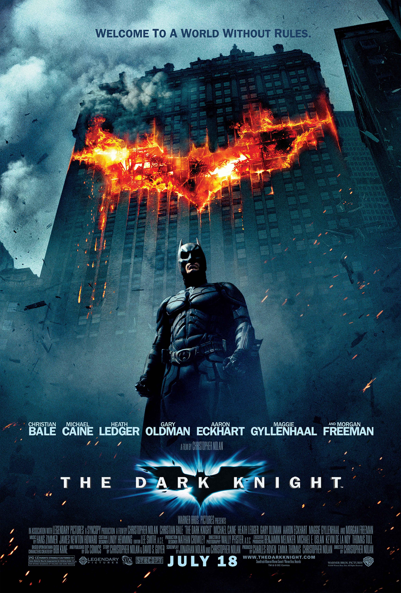

Сол: 2008
Жанр:Боевик, Криминал, Драма
Коргардон:Christopher Nolan
Брюс Уэйн ҳамчун Батман дар шаҳри Готэм бо душмани хатарнок — Ҷокер рӯ ба рӯ мешавад. Ин мубориза тартиботи шаҳрро ба озмоиши бузург мегузорад.